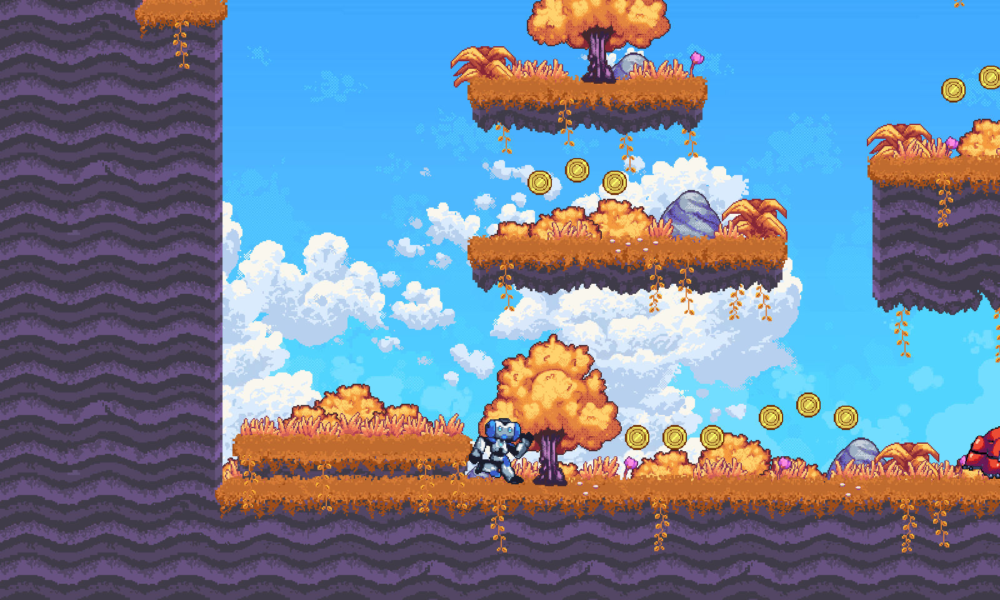

Expectrail review: the same checks before and after a change
REPAIR DEMONSTRATED
A requested check failed on the game before the change and passes after it, every required check passes, and the verifier accepted.
Recorded evidence: fix matrix run 41105875960, demo run 1, Oct 30, 2026. This page shows that run as it wrote its record; nothing was run again.
Each check, before and after the change
| Check | Role | Before | After | Result |
|---|---|---|---|---|
player-stays-above-ground | requested | fail | pass | REPAIRED |
player-motion-on-smoke | guard | fail | pass | REPAIRED |
coins-visible | guard | pass | pass | PRESERVED |
player-always-visible | guard | fail | pass | REPAIRED |
Before is the game with the reported bug and no fix; after is the same game with the candidate. A requested check is one the repair request names as failing; only those can show a repair. Guards must pass after the change. The verifier also checked the clean game, separately.
The first failing frame, before and after

Private routes
1 check on the private routes: 1 passed, 0 failed, 0 need review (source: harness). Route names and frames stay private.
How the review ran
- preflight completed
- base completed
- candidate completed, reused the verification
- compare completed
- export completed
Diagnostics
- None
Identities
- Review run
review-20261030T183338Z-32465(live mode)- Repair request
rr-triage-player-stays-above-ground, SHA256f2e2b73e844199de6dce919b79a3c65da4bc06425f9dcb7581e6a08324100463- Candidate patch
ceda817fc43cb1249404a110b2517adc10e22b5d39ec7c29f0ed322862e38c09- Verification file
16a564f0d6723ea206d5ecff39a367cc9e223ab94b0192dc8c2518ea14e6b133- Failing base
- harness, observed by SAM 3.1, replay
284866689402 - Candidate
- harness, observed by SAM 3.1, replay
6f5fe823318b - Run it again
python3 -m agents.review_change --request <request.json> --candidate <candidate.patch> --mode live --out <new folder>
This page shows evidence for these checks on this route. It is not proof that the game is correct, and no status here approves a merge or a release. Generated from change-evidence.json.